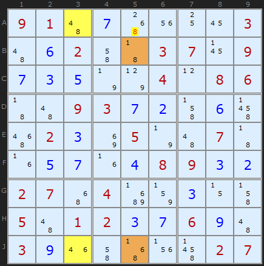
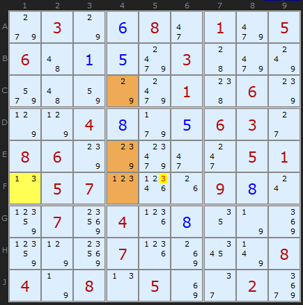
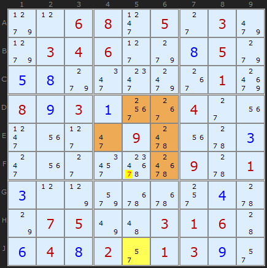
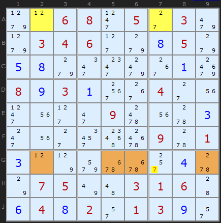
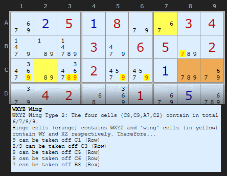
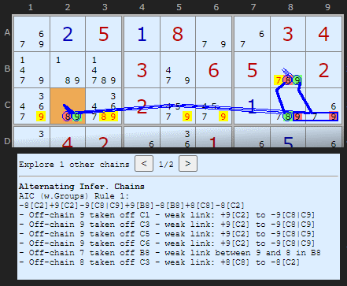
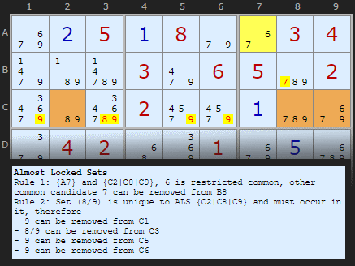
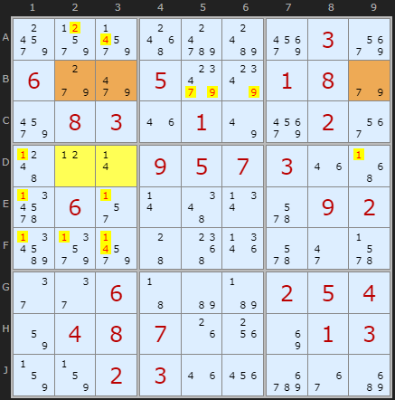
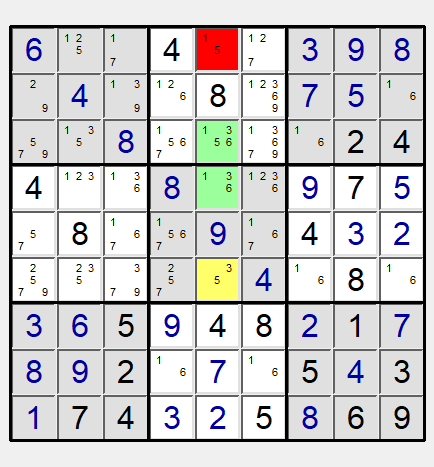

SudokuWiki.org
Strategies for Popular Number Puzzles
Almost Locked Sets
On the occasional Diabolical and most certainly on many Extreme Sudoku puzzles there will be many opportunities to whittle down the candidates by identifying and using Almost Locked Sets. Lets think about the terms first. A set of candidates is locked if the number of candidates in a group of cells matches the number of cells they are in. For example, a Naked Pair of 3/7 on two cells is a locked set: two candidates in two cells. They are considered "locked" because we know all the candidates for the cells; we just don't know the solution order.
Any set of cells with exactly one extra candidate is "Almost Locked". The solver now uses curley {brackets} to denote them bringing them in line with AIC chain links.
Note: these examples require AICs and Forcing Chains to be unticked in the solver.
ALS is strongly related to XYZ-Wings and WXYZ-Wings which are subsets of ALS.
Any set of cells with exactly one extra candidate is "Almost Locked". The solver now uses curley {brackets} to denote them bringing them in line with AIC chain links.
Note: these examples require AICs and Forcing Chains to be unticked in the solver.
ALS is strongly related to XYZ-Wings and WXYZ-Wings which are subsets of ALS.

Take this example where two Almost Locked Sets have been coloured in yellow {A3,J3} and brown {B5,J5}. You can immediately see that the first set has {4,6,8} as members and the brown set has {1,6,8}. So far so good. But since Almost Locked Sets are so common - and you will see them everywhere!, perhaps the greatest difficulty with this strategy is finding ones we can work with. The building blocks are easy enough, but spotting the formations that conform to the rules outlined below can be tricky.
Rule 1: The Almost Locked Set XZ Rule
To make use of Almost Locked Sets, we're going to need two or more of them. Their sizes don't matter, but they ought to be able to 'see' each other that is, have some cells that share a unit (row J in this example). We also need a mixture of candidates in both sets. If there is a common candidate found in both sets and this common candidate is among those cells that can 'see' each other, this candidate can exist only in one set or the other. We call this candidate a restricted common candidate (RCC). In the two sets in the example above, 6 is a restricted common because 6 in one set will remove it in the other. Let's call any restricted common candidate X.
The Z part of the rule involves any other candidate found in both ALSs but not a restricted common; that, a candidate that still appears in both ALSs and is not exclusive to one or the other. In the above example, Z is number 8. Now, it so happens that any other 8 on the grid that can 'see' all the 8s in both ALSs can be removed.
Making an interesting observation is one thing, but what's the proof? Think of the 8 in A5 in the example above. If 8 were the solution, we'd quickly get a contradiction in at least one of the two sets. A3 would become 4, forcing J3 to be 6 and that removed 6 from J5. B5 would become 1 and since 6 and 8 are removed form J5 as well we are left with a 1 also in J5 - two 1s in the column. So following the consequences through shows the 8 in A5 must go.
The Z part of the rule involves any other candidate found in both ALSs but not a restricted common; that, a candidate that still appears in both ALSs and is not exclusive to one or the other. In the above example, Z is number 8. Now, it so happens that any other 8 on the grid that can 'see' all the 8s in both ALSs can be removed.
Making an interesting observation is one thing, but what's the proof? Think of the 8 in A5 in the example above. If 8 were the solution, we'd quickly get a contradiction in at least one of the two sets. A3 would become 4, forcing J3 to be 6 and that removed 6 from J5. B5 would become 1 and since 6 and 8 are removed form J5 as well we are left with a 1 also in J5 - two 1s in the column. So following the consequences through shows the 8 in A5 must go.
A 1 Cell + 3 cell Example
The N+1 definition also applies to single cells - they simply must have two candidates in them - the natural bi-value cell. This next example uses a 3-cell ALS in combination with the 1-cell ALS.

The XZ rules says we can use that 3 to look for other 3s that share units with both ALSs. The sole 3 on F5 can see F1 (row) and the 3s in E4 and F4 (because of the box). That 3 can be removed.
More Complex Examples

Rule 1: [J5] and {D5|D6|E4|E6|F6}, 5 is restricted common, other common candidate 7 can be removed from F5
We have an enormous 5-cell ALS in brown with 5 as the restricted common. You can see that 5 occurs only in D5 and aligns with the yellow ALS J5. Its pretty hard to pick out a 5-cell ALS but if you add the numbers available in the brown cells you can see there are 6 possibilities. 7 is shared by both ALSs and is not restricted so it can be removed.

Rule 1: {A2|A7} and {G2|G5|G6|G9}, 1 is restricted common, other common candidate 7 can be removed from G7
Overlap with other strategies

The solver here first finds this as a WXYZ-Wing

The eliminations can be expressed as an Alternating Inference Chain

And then it gets to the Almost Locked Set.
ALS-XZ rule 2 — Double Linked Rule
Thanks to David Bird (in 2016) for the extension to the ALS-XZ rule that allows other candidates to be eliminated. And to STRMCKR for the example and forum post. There is earlier discussion (2009) on the same forum here. Sorry this has taken seven years to document!

When there are two restricted common candidates it will be the case that each one of them will be false in one of the ALSs locking all their other member digits. In practise this means that any candidate in the ALS that is unique to that ALS (and not the other) is a solution somewhere in that ALS set - so other cells that can see all members of the ALS can have that candidate removed.
In STRMCKR's example 2 and 4 are the restricted common candidates. For ALS {D2|D3} candidate 1 is unique to {D2|D3} and 1 does not appear in {B2|B3|B9}. All thoses 1's in box 4 can be removed.
Likewise 7 and 9 are only found in row and are 'locked in' to B239 so can be removed from the rest of the row. (Turn off AIC and Forcing Chains)
Almost Locked Sets
Rule 1 (Doubly Linked): {D2|D3} and {B2|B3|B9}, 2/4 are restricted common and are locked in to these ALSs. Therefore
- 4 can be removed from A3
- 4 can be removed from F3
Rule 1 (Doubly Linked): {D2|D3} and {B2|B3|B9}, 2/4 are restricted common and are locked in to these ALSs. Therefore
- 2 can be removed from A2
Rule 2: Set (1) is unique to ALS {D2|D3} and must occur in it, therefore
- 1 can be removed from D1
- 1 can be removed from D9
- 1 can be removed from E1
- 1 can be removed from E3
- 1 can be removed from F1
- 1 can be removed from F2
- 1 can be removed from F3
Rule 2: Set (7/9) is unique to ALS {B2|B3|B9} and must occur in it, therefore
- 7/9 can be removed from B5
- 9 can be removed from B6
Rule 1 (Doubly Linked): {D2|D3} and {B2|B3|B9}, 2/4 are restricted common and are locked in to these ALSs. Therefore
- 4 can be removed from A3
- 4 can be removed from F3
Rule 1 (Doubly Linked): {D2|D3} and {B2|B3|B9}, 2/4 are restricted common and are locked in to these ALSs. Therefore
- 2 can be removed from A2
Rule 2: Set (1) is unique to ALS {D2|D3} and must occur in it, therefore
- 1 can be removed from D1
- 1 can be removed from D9
- 1 can be removed from E1
- 1 can be removed from E3
- 1 can be removed from F1
- 1 can be removed from F2
- 1 can be removed from F3
Rule 2: Set (7/9) is unique to ALS {B2|B3|B9} and must occur in it, therefore
- 7/9 can be removed from B5
- 9 can be removed from B6
Comments
Email addresses are never displayed, but they are required to confirm your comments. When you enter your name and email address, you'll be sent a link to confirm your comment. Line breaks and paragraphs are automatically converted - no need to use <p> or <br> tags.
... by: LJC
I imagine this situation isn’t too rare, but it’s probably extremely hard to spot.
... by: Ymiros
If 2 ALS have a common restricted digit that means you only have 1 more digits than cells to work with. If you were now to place a digit that completely removes a digit that is not commonly restricted from both ALS you effectively remove 2 digits, leaving 1 fewer digits than cells to work with (which is obviously wrong).
Also concerning Robert's comments I think his last comment is a correction for his rule 1 and not his rule 2 as the eliminations he describes do not work on sets with any "excess"
All in all I think this can be generalised into having any number of sets that each contain some number N of digits in some lower number C of cells and then some of them are restricted.
Now as soon as you look at 3 sets there will be different types of restrictions occuring as a digit could be able to appear only once across all 3 sets or it could be able to only appear once in 2 of the sets but could still appear in the third set in addition.
In other words in the first case placing it in one of the sets eliminates it from 2 other sets and in the second case from 1 other set.
Thus I call them 2-restricted or 1-restricted respectively.
If no digit is restricted you just add all N and all C of the sets you are looking at and end up with N digits (digits may repeat here) to put into C cells, in other words you have N - C degrees of freedom.
Now if digits are restricted commons that effectively reduces your N and it does so by exactly the strength as I have defined it, so a 1-restricted digit reduces N by 1, a 2-restricted by 2 etc.
(This is due to it appearing in N as often as you include sets it appears in, but for the sets it is restricted in it should've appeared only once)
C stays the same, so your degrees of freedom also go down by that amount.
If now a candidate would completely remove more digits than the degree of freedom it can be eliminated.
(I hope this is obvious as it would result in having to place a number of digits in a larger amount of cells inevitably leaving at least one empty.)
You have to be very careful though, let's say you are looking at the sets 1,2,8 and 3,4,8 where 8 is not a restricted digit removing 8 from both sets counts as 2 eliminations while removing it from one set only counts as 1 elimination. If you only remove it from cells within a set but it still can go somewhere in the set that is no elimination at all.
However if 8 were a restricted common in both sets eliminating it from just one of the sets would not amount to eliminating one digit, instead it has to be eliminated from all sets it is restricted in at once to count as a single elimination.
Let us look at the example for the double linked rule in this article to showcase this:
We have two sets: 2,4,7,9 and 1,2,4.
Thus our N is 7.
The sets have 3 and 2 cells respectively adding to C = 5.
We have 2 digits that are 1-restricted, so our N decreases by 2.
We can see that N - C = 0, so we have no degree of freedom.
Thus any cell that removes even just one of the digits from one of the sets can be eliminated.
We can also see that only the 2 and 4s get removed that remove the restricted common digits from both sets.
Of course all this also works with the complementary aka hidden sets, though thinking about that makes my head hurt.
I also do not know how many eliminations this generalisation even opens up.
Furthermore for a human solver I do not think this strategy is very feasible (Not that I myself am any good at spotting regular ALS eliminations), but I think the best strategy to search for these might just be picking one ALS you can see and then expanding from that by adding other cells / sets of cells that are linked to the original set in a way that the degree of freedom decreases or stays the same to increase the number of eliminations (Though with this approach there will be a LOT of links to pay attention to in the end).
What StrmCkr proposes here goes in the same direction as what he's mentioning are 3 ALS, which are triply linked.
3 ALS means 3 sets which one more digit than cells, so a degree of freedom of 3
Triply linked in this case means 3 1-restricted commons, so a reduction of the degree of freedom by 3 to 0.
Therefore you can apply the eliminations as discussed above.
The same will obviously work with 4 ALS and 4 links
I don't think the example they make in their comment is a good one cuz that can also just be done with a double linked ALS as they say, but the last example of their forum post has a better example as it contains 3 sets that are distinctly separate and at least your solver fails to solve the puzzle without guessing, but can do it if you put in the eliminations provided in that example (though the puzzle remains absolutely brutal even after that).
the N als with N RCC rule makes them all a.i.c Rings technically:
warning note that the elimination rules can get interesting with als as the internal nodes can also be weak-inferenced to each other more then once through out the chain. {of course depending on how complex & more exacting}
i do agree the example below isn't great but it show cases the logic is sound: i did email over better examples to Andrew a while back which should be the forum posts. + others.
... by: ALSFAIR INLOVEANDWAR
I have several examples of two overlapping ALS where one cell can be described as existing is both sets. If one accepts that this is allowed then eliminations are possible according to the ALS xz rules. The link to the diagram is below (sorry didn't know how to paste one in)


Set A {1,3,5,6} is the two green cells plus the yellow cell. n = 4 so n-1 = 3 cells
Set B {3,5} ids the yellow cell
The overlapping cell is the yellow one.
Restricted common x = 3 which will only end up in A or B
Common Candidate z = 5 which is eliminated and shown as the red cell.
Is this legal ? I have several other of these which worked perfectly for solutions to difficult puzzles. However....
I understand it is not legal as the restricted common (3) shares the overlap.
... by: Anonymous
I did encounter ALS-XZ Rule 2 when using the solver and it seems that your assumption is actually correct. The solver's implementation seems similar to this here: http://hodoku.sourceforge.net/en/tech_als.php#axz2
However the solver uses the words 'unique to one ALS' which I think is wrong, as they need not be.
... by: Robert
My proposed "Rule 2" is correct as far as it goes, but it is incomplete. If there are two restricted digits in the ALS case, or a number of restricted digits equal to the "excess" (definition in my earlier comment) if we allow AALS or even more "A"s, then all restricted digits must occur in the one set or the other. Therefore, in any cell outside the two sets, if one of the restricted digits occurs and can "see" all occurrences within the two sets, it can be eliminated. So there are two types of eliminations - restricted digits need to be able to see all occurrences in both sets, but unrestricted digits only have to see all occurrences in one of the two sets. Unrestricted digits in this case do not have to occur in both sets; however, if they do, some of them may be eliminated, if they can "see" all occurrences of the same digit in the other set.
... by: Robert
In my database of 341 "advanced" puzzles, I run the ALS strategy (with my version of Rule 2, which may or may not be the same as David Bird's) together with basic techniques, and get 66 puzzles fully solved.
My extended version of the strategy only finds eliminations based on ALSs, AALSs, and AAALSs. Furthermore, although my solver does find some eliminations involving AAALSs, it finds the same eliminations when restricted to just ALSs and AALSs.
So I don't know whether there is some general wisdom here that there is no need to check for anything more than an AAALS, or if that is just a specific property of my sample of 341 puzzles.
... by: Robert
First, my speculation about Rule 2 - if there are two restricted digits in the pair of ALSs, then any candidate in any cell that can see all of the same digit in just *one* of the ALSs can be eliminated. This might possibly include occurrences of that digit in the other ALS (so the same value occurring in both ALSs, but it is not restricted, and therefore possible for the same digit to appear in the solved puzzle in both ALSs). My own solver finds some instances of this occurring in my sample of "advanced" puzzles (now up to 341 puzzles), and can solve 66 of those puzzles using the basic techniques, the ALS Rule 1 above, and my proposed version of the ALS Rule 2. Using only Rule 1, I get 65 puzzles solved instead of 66, and possibly some additional eliminations in puzzles that are partially solved (I would have to check).
Rule 1 is a special case of AICs with ALSs, but with the size limitation in the implementation of ALSs that appear in AICs, it is possible that the solver might find some eliminations using this strategy, that is doesn't find using AIC with ALSs. My version of Rule 2 is also a special case of AICs with ALSs.
Now, for my extension. We can use not just ALSs, but AALSs, AAALSs, etc. So here is how it works. Find two groups of cells that are not locked sets. (If they include locked sets as subsets, these should be thrown away - the strategy is still valid, but other strategies can be applied.) So they might be ALSs, AALSs, AAALSs, or maybe even more Almosts. Call the "excess" the combined number of "almosts" in the two sets. For example, if one set is an ALS, and another is an AALS, the "excess" is three. If there are two AALSs, the "excess" is four. If there are two ALSs, the "excess" is two. (I think this strategy probably works with locked sets as well, but in that case, easier strategies can be used instead.)
The number of restricted digits (same definition used for ALSs) cannot be more than the "excess". If it is, the puzzle has no solution (or we have made a logical error while trying to solve it).
Rule 1: if the number of restricted digits is equal to the "excess", then any candidate in any cell that can "see" all occurrences of an unrestricted digit in *either* (not both) of the sets can be eliminated. This might possibly include candidates in one of the two sets, if it can see all occurrences of an unrestricted digit in the other set.
Rule 2: If the number of restricted digits is equal to the "excess" minus one, then any candidate in any cell that can "see" all occurrences of an unrestricted digit in *both* of the sets (and the unrestricted digit must occur in both sets) can be eliminated.
I have implemented this in my own solver. Once I had the ALS code running smoothly, it probably took me five minutes to make the extension (definitely less than ten). It adds a lot of processing time, because *every* set of cells within a unit that is not a locked set, is an ALS, an AALS, an AAALS, an AAAALS, an AAAAALS, an AAAAAALS, an AAAAAAALS, or an AAAAAAAALS. In my database of advanced puzzles, it does not solve any additional puzzles (when combined with basic techniques) than the 66 solved using ALS Rule 1 and my version of Rule 2 (which may or may not match David Bird's Rule 2). However, it does find some additional eliminations, bring some of the partially solved puzzles a little closer to solution.
When I combine it with all the other strategies I have implemented, although a number of my "super-ALS" pairs are found, and some eliminations made, all the same eliminations would have been made by other strategies anyway. So it is possible this extended strategy is a special case of some other strategies (just as Rule 1 of the ALS strategy, and my version of Rule 2, are special cases of AIC with ALSs).
... by: Robert
Is it that, if there are two restricted digits, then any candidate that can see all instances of a non-restricted digit in *either* (not necessarily both) ALS can be eliminated?
... by: Gary
... by: Robert
Which brings me to this one. All of the examples above look like they could be considered examples of AICs with ALSs, if we define a weak link between certain candidates in the ALSs. In these examples, the resulting AIC has five links, and the candidate to be eliminated as between two weak links. If this candidate is "on", then the same candidate must be "off" in both the ALSs. But because they are ALSs, if one of the candidates is "off", all the other candidates must be "on" (strong link), although if a candidate appears several times within the ALS, we won't know which one is "on". But for the restricted common, there is a weak link between the two ALSs - "on" in one means "off" in the other. So we have an AIC. In the last example shown,
Candidate 7 in G7
is weakly linked to
Candidate 7 in ALS {G2,G5,G6}
is strongly linked to
Candidate 1 in ALS {G2,G5,G6}
is weakly linked to
Candidate 1 in ALS {A2,A7}
is strongly linked to
Candidate 7 in ALS {A2,A7}
is weakly linked to
Candidate 7 in G7
So it is an AIC, Candidate 7 in G7 can be eliminated by Rule 3 (and Rule 1 and Rule 2 are really just special cases of Rule 3 anyway).
So I think by defining the notion of a "weak link" between ALSs (which is done using the restricted common), we could build more complex inference chains than the five-step ones shown above.
Whether this is computationally feasible, let alone human-feasible, I do not know at this point.
... by: Twifty
"any other candidate found in both ALSs but not a restricted common; that, a candidate that still appears in both ALSs and is not exclusive to one or the other."
but, what if there are two restricted commons?
Here is an example of a 1 and 4 cell ALS:
https://www.sudokuwiki.org/sudoku.htm?bd=360020009920000050870009203490750000010000090030918002259400831080090020040080965
The solver claims that candidates 1,4 can be removed from A8; which contradicts the above statement.
... by: PAUL
... by: Cerberus
I was looking at the Almost Locked Sets web page, at the bottom you have a title, ALS-XZ Rule 2, with a thanks to Davis Bird and that Docs were to come. Where can they be found, or do they not exist yet?
Thanks in advance.
... by: strmckr
http://hodoku.sourceforge.net/en/tech_als.php
{listed half way down the page for easy reference}
that rule has been on enjoy sudoko forms since 2006 roughly.
... by: Anton Delprado
ALS XZs are just a two step chain and a "ALS Chain" is just continuing this logic.
These may seem hard to find at first, but if you are already looking for XY-Chains I have found it quite easy to include 2 and 3 cell ALSs in the chaining logic.
Of course all of these are examples of AICs but I find those to be quite hard to find in general.
... by: Jan
It all happens in column 9. The first ALS is a 6-cell set {A9, B9, C9, D9, E9, J9} and the second is the single cell set {F9}. The restricted common is 3. This results in the elimination of candidate 8 in cells F9 and H9. The fact that both sets can be in one unit is not so evident, that's why it find it so interesting.
I also find it interesting for the fact that it illustrates that there can be more than one restricted common in each set. The first ALS has a 3 in both D9 and E9. More explicitly: if all candidates for X in set 1 see all candidates for X in set 2 then X is a restricted common for both sets.
... by: ralph maier
Still interested to know whether a restricted candidate is really necessary for an ALS to work
... by: sunshine48
... by: Douglas Boffey
... by: Tokgot
... by: Jason
If I understand correctly, adding G5 to the brown ALS does no good. You can only use this technique to make eliminations on numbers common to both the ALS.
In Example 1, adding G5 to the brown ALS picks up another candidate, the 9, but it will not lead to any more eliminations because the yellow ALS does not have a 9. If the yellow ALS happened to have a 9, then it could help.
Essentially, the relationships between the common elements of the two ALS means that the unrestricted common candidate (in Example 1, it's the 8) has to be the correct solution for a cell in at least one of the two ALS. So at least one of the yellow or brown cells that contain 8 as a candidate must actually be a 8 in the final answer.
It logically follows that 8 can be removed as a candidate in any cell that can see ALL of the 8s in the yellow and brown squares.
... by: Ian Saliba-Curtis
Example 1: Could you not also have added G5 to the brown ALS and made it an almost locked triplet over 4 candidates?
If yes - is there a reason why you didn't?
If no - please could you explain why not?
Many thanks! Your site is fascinating.
Kind regards,
Ian
... by: Marc
If one of the ALS is a bi-value cell, then the other ALS cannot have a cell in the same box of the bi-value cell, is that true?
If none of the ALS is a bi-value cell, and they both are in a row (or both in a column), can both these rows (or columns) appear in the same band (or stack)?
Answer 1 = No, it's not true. A bi-value cell ALS can share the same box with one or more cells of the other ALS
Answer 2= Yes, they can.
... by: rlhaben
... by: Grandad
... by: Terry
Excellent site ;-)
I'm just getting to grips with some of the more difficult strategies. I had a puzzle loaded in the solver and it came up with an ALS that I fail to understand :( The starting point for the puzzle is
..7...32.1..2.7..6.26.5.71..8...2....19.6.5...6.7......91.2..475..17.....78......
If you just keep clicking 'Take Step' until it comes to the first ALS, I can't see how 8 is restricted as 6 can also be seen by both ALSs.
What am I missing in my understanding of the ALS technique?
Many thanks and best wishes,
Terry
Rule 1 (Doubly Linked): {G7} and {H2|H3|H7|H8|H9}, 6/8 are restrictedcommon and are locked in to these ALSs. Therefore
- 6 can be removed from J7
- 6 can be removed from J8
... by: Ana
... by: Luciano